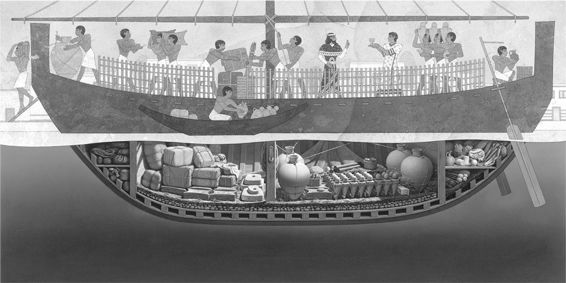

No sabemos qué le sucedió, en sus últimos momentos, a un barco hundido hacia 1300 a. C. en aguas de la costa suroccidental de Turquía, en Uluburun (cuya traducción aproximada podría ser «el gran promontorio»). ¿Volcó a consecuencia de una gran tormenta? ¿Se fue a pique después de chocar con algún objeto sumergido? ¿Acaso su tripulación lo hundió intencionadamente, para que los piratas no pudieran apresarlo? Los arqueólogos no lo saben, ni tampoco están seguros del origen del navío, de su destino o de los puertos en los que hizo escala. Pero sí pudieron recuperar la carga, que sugiere que, muy probablemente, este barco de la Edad del Bronce navegaba desde el Mediterráneo oriental hacia el Egeo.[1]
Un joven turco que hacía inmersión para recoger esponjas descubrió los restos de la nave en 1982. Dijo que, durante una de sus primeras inmersiones, había visto «galletas metálicas con orejas» esparcidas por el fondo del mar. Su capitán comprendió que la descripción encajaba con ciertos lingotes de cobre propios de la Edad del Bronce, los lingotes «de piel de toro» (llamados así por su forma). Unos arqueólogos del Instituto de Arqueología Marítima (INA, en sus siglas inglesas), de la Universidad de Texas A&M, le habían enseñado imágenes de aquellos objetos y le pidieron que estuviera atento, por si los veía.
Los arqueólogos que buscaban aquella clase de objetos estaban dirigidos por George Bass, pionero en el campo de la arqueología subacuática durante la década de 1960, cuando aún era estudiante en la Universidad de Pensilvania. En aquella época, los equipos de submarinismo dotados con escafandras autónomas eran un invento relativamente moderno, y el estudio de Bass de un naufragio en el cabo Gelidonya, en el litoral turco, representó la primera excavación submarina oficial de un naufragio de la Edad del Bronce dirigida por arqueólogos profesionales en aquella región.
Los descubrimientos de Bass en el cabo Gelidonya —el autor concluyó que los restos correspondían a un barco cananeo hundido hacia 1200 a. C., en ruta hacia el Egeo— fueron recibidos con polémica y un considerable escepticismo, cuando, en 1967, vio la luz la publicación oficial de las excavaciones.[2] En su mayoría, a los arqueólogos les costaba creer que hubiera habido contacto y comercio entre el Egeo y el Oriente Próximo en fechas tan antiguas, hace más de tres mil años; más aún, que los cananeos tuvieran la capacidad de navegar en aguas del Mediterráneo. Bass juró entonces que, en algún momento de su carrera, encontraría y estudiaría otro barco de la Edad del Bronce, para demostrar que sus conclusiones sobre los restos del cabo Gelidonya eran plausibles. En la década de 1980, los restos de Uluburun le ofrecieron esa segunda oportunidad. Se fecharon hacia 1300 a. C., unos cien años antes que el barco de Gelidonya.
Hoy se tiende a creer que el barco de Uluburun podría haber iniciado su viaje tanto en Egipto como en Canaán (tal vez en Abu Hawam, en lo que hoy es Israel), y que realizó escalas en Ugarit (norte de Siria) y, posiblemente, en un puerto de Chipre. Luego se encaminó hacia el oeste, por el Egeo, siguiendo la costa sur de Anatolia (la Turquía moderna). Durante el trayecto, la tripulación del navío había subido a bordo vidrio en bruto; vasijas de almacenaje llenas de cebada, resina, especias y quizá vino; y lo más preciado de todo: casi una tonelada de estaño y diez de cobre, en bruto también, que se mezclarían para formar ese metal tan maravilloso que es el bronce.

Fig. 8. Reconstrucción del barco de Uluburun (Rosalie Seidler/National Geographic Stock; por cortesía de la National Geographic Society).
A tenor del cargamento, estamos bastante seguros de que viajaba hacia el oeste desde el Levante, al parecer con rumbo a una ciudad portuaria del Egeo; tal vez una de los dos o tres puertos de la Grecia continental que servían a Micenas, o quizá una de las otras grandes ciudades, como Pilos, en el continente o, en Creta, Kommos o la propia Cnossos. El mero hecho de constar que hubiera otro barco navegando de este a oeste durante la Edad del Bronce tardía bastó para confirmar las teorías de Bass y alterar por completo las ideas que los investigadores modernos tenían sobre el alcance del comercio y los contactos que se produjeron hace más de tres mil años. Hasta la fecha se han recuperado tres navíos de la Edad del Bronce, pero el pecio de Uluburun es el más grande, más rico y mejor estudiado.
Seguimos sin conocer la identidad del dueño y los financieros de la expedición. Cabe conjeturar con distintas posibilidades para explicar los orígenes del navío y la localización final del pecio. Podría haberse tratado de una empresa comercial, enviada por comerciantes del Oriente Próximo o de Egipto, quizá con las bendiciones de un faraón egipcio o un rey cananeo. O tal vez la pusieran en marcha directamente un rey o un faraón, como regalo de homenaje de un soberano a otro, como solía suceder en la época de Amarna, unas pocas décadas antes. Quizá los micénicos habían mandado al barco para que fuera «de compras» al Mediterráneo oriental, y se hundió en el camino de regreso. Los comerciantes de a bordo podrían haber adquirido materias primas y otros productos que no se podían conseguir en la propia Grecia, como el estaño y el cobre, además de la tonelada de resina de terebinto (de un árbol semejante al del pistacho) que podía emplearse para fabricar perfumes en Pilos o en la Grecia continental, que se embarcarían de nuevo hacia Egipto y el Mediterráneo oriental. Desde luego, no faltan posibilidades a la hora de imaginar un panorama. Si el barco iba dirigido a los micénicos, estos debieron de aguardar impacientes la llegada de la carga, puesto que había metal en bruto suficiente para armar a un ejército de trescientos hombres con espadas, escudos, yelmos y armaduras de bronce, además del preciado marfil y otros artículos exóticos. Sin duda, el día en que el barco se hundió, hacia el año 1300 a. C., alguien o algún reino perdió una fortuna.
El barco de Uluburun se hundió en aguas bastante hondas: la popa se encuentra hoy a unos 43 metros de profundidad, y el resto de la nave yace inclinado hasta llegar a unos 52 metros. Sumergirse a una profundidad de entre 43 y 52 metros es peligroso, porque supera el límite de seguridad de los equipos de submarinismo. Solo se autorizó a los buzos del INA a hacer dos inmersiones al día, de veinte minutos cada una. Además, a esas profundidades, el nivel de gases inhalados sube y puede producir un efecto narcótico. Trabajar a tanta profundidad, dijo Bass, los hacía sentir como si se hubieran tomado dos martinis antes de empezar; por eso, cada inmersión y cada movimiento realizado bajo el agua debía haberse proyectado de antemano.
Durante casi una docena de temporadas, de 1984 a 1994, el equipo hizo más de 22.000 inmersiones en el pecio sin sufrir ningún accidente de gravedad, claro testimonio de las precauciones que tomaron y del hecho de que sus buzos estaban bajo la supervisión de un antiguo SEAL de la Marina.[3] El resultado final fue un plano de los restos y el cargamento de una exactitud milimétrica, como cualquier otro realizado en una excavación terrestre, pese a las enormes profundidades a las que estuvieron trabajando. Las inmersiones también se tradujeron en la recuperación de miles de objetos, que aún se estudian hoy día.
El barco propiamente dicho medía en origen unos 15 metros de largo. Estaba bien construido, con tablas y quilla de cedro libanés, y un casco con ensambladura de mortaja y espiga.[4] Hasta ese momento, el primer pecio descubierto en el Mediterráneo que utilizaba esta técnica de la mortaja y la espiga era el de un naufragio en aguas de Cerinea (Kirenia, en el litoral de Chipre), fechado más de mil años después, hacia 300 a. C.
Fue especialmente difícil trabajar con los lingotes de cobre, de los que había más de 350, y extraerlos a la superficie. Durante los tres mil años que habían permanecido bajo el agua, colocados en forma de espina de pescado, en cuatro filas distintas, muchos habían sufrido una desintegración considerable y se encontraban ahora en un estado de extrema fragilidad. Al final, los conservadores arqueológicos que trabajaban en el equipo de Bass tuvieron que utilizar un nuevo tipo de cola: un adhesivo que podía inyectarse en los restos de un lingote de forma que, en el transcurso de un año, se congelara y endureciera bajo el agua. La cola acabaría por unir las diversas partes del lingote descompuesto con la fuerza suficiente como para poder sacarlo a la superficie.
Pero en el barco había muchas otras cosas, además de los lingotes de cobre. Resultó que la carga del barco de Uluburun estaba integrada por un increíble surtido de productos, un auténtico manifiesto internacional. En conjunto, el barco transportaba productos de al menos siete países, estados e imperios distintos. Sumado al cargamento principal de diez toneladas de cobre chipriota, la tonelada de estaño y la de resina de terebinto, había también dos docenas de troncos de ébano de Nubia; casi doscientos lingotes de vidrio en bruto de Mesopotamia, en su mayoría teñido de azul oscuro, aunque había también otros de color azul claro, violeta e incluso de un tono de ámbar o miel; unas 140 jarras cananeas de dos o tres medidas básicas, que contenían la resina de terebinto, restos de uva, granadas e higos, además de especias como cilantro y zumaque; flamante alfarería de Chipre y Canaán, que incluía lámparas de aceite, boles, jarras y tarros; escarabeos egipcios y sellos cilíndricos de otros puntos del Oriente Próximo; espadas y dagas de Italia y Grecia (algunas de las cuales quizá pertenecían a la tripulación o los pasajeros), por ejemplo una con una empuñadura con incrustaciones de ébano y marfil; e incluso una maza-cetro de piedra, procedente de los Balcanes. Había también joyería de oro, con pendientes y un cáliz; envases cosméticos de marfil en forma de pato; boles de cobre, bronce y estaño, y otras vasijas; veinticuatro anclas de piedra; catorce piezas de marfil de hipopótamo y un colmillo de elefante. Y había una estatua de una deidad cananea, de unos 15 centímetros de altura, realizada en bronce recubierto parcialmente de oro; si se esperaba que actuase como divinidad protectora del barco, no cumplió muy bien su cometido…[5]
Probablemente, el estaño venía de la región de Badajshán en Afganistán, uno de los pocos lugares en que podía obtenerse durante el segundo milenio a. C. El lapislázuli que había a bordo provenía de la misma zona y había viajado miles de kilómetros antes de que lo subieran al barco. Muchas de las piezas, como los sellos cilíndricos de lapislázuli, eran pequeñas y se podían perder con facilidad durante las excavaciones, sobre todo cuando, para retirar la arena que cubría los restos, se recurría a unos tubos de aspiración colosales. El mero hecho de que se recuperasen atestigua la pericia de los arqueólogos que excavaron los restos submarinos, dirigidos primero por Bass y luego por el que fue elegido como sucesor: Cemal Pulak.
Uno de los objetos más pequeños encontrados a bordo fue también uno de los más importantes: un escarabeo egipcio hecho de oro macizo. A la singularidad de un artículo de estas características, poco frecuente de por sí, se une la presencia de inscripciones jeroglíficas en las que aparece el nombre de Nefertiti, la esposa del faraón hereje, Ajenatón. En el escarabeo, su nombre se escribe «Nefer-Neferu-Atón», apelativo que Nefertiti solo utilizó durante los primeros cinco años de su reinado, en la época en que su esposo debía de estar en el momento culminante del proceso de condena de toda deidad egipcia, exceptuando a Atón, el disco solar, a quien él —y solo él— podía rendir culto directamente.[6] Los arqueólogos utilizaron el escarabeo para perfilar la datación de la nave, porque este no podía haberse fabricado —y por tanto el barco no podía haber navegado— antes de que Nefertiti llegase al poder, hacia 1350 a. C.
Los arqueólogos pudieron fechar los restos hundidos con otros tres métodos. Un sistema era la datación por radiocarbono (carbono-14) de las ramas más jóvenes, utilizadas en la cubierta de la nave. Otro era la dendrocronología —el recuento de los anillos de los árboles—, aplicada a los troncos usados para construir el casco. La tercera técnica se basó en el estudio de la alfarería minoica y micénica, muy bien conocida; la recuperada a bordo se podía fechar, a juicio de los especialistas, hacia finales del siglo XIV a. C. La combinación de los cuatro sistemas de datación independientes sugiere que el naufragio se produjo hacia 1300 a. C., en los primerísimos años del siglo XIII a. C., con un margen de unos pocos años, arriba o abajo.[7]
En el barco se hallaron fragmentos de una pequeña tablilla de madera, originalmente con bisagras de marfil, que se había conservado dentro de un recipiente de almacenamiento en el cual quizá estuvo flotando mientras el barco se hundía. Recuerda en algo a la «tablilla doble» grabada con «luctuosos signos» (Ilíada, VI, 168-169). Esta supera en antigüedad, por más de quinientos años, a las tablillas de escritura similares que se habían recuperado en Nimrud, Iraq. La tablilla del barco quizá contuviera la anotación del itinerario de la nave o, tal vez, el manifiesto de la carga. Sea como sea, la cera con la que se había escrito el texto, por ambas caras de la madera, se perdió hace mucho tiempo y no dejó ninguna señal de su contenido.[8] Sigue siendo, por tanto, imposible determinar si el cargamento de la nave se había concebido como regalo para la realeza, quizá del rey de Egipto para el rey de Micenas, o si pertenecía a un comerciante particular, que vendía sus productos en los principales puertos del Mediterráneo. Según hemos conjeturado antes, también podría tratarse de las compras realizadas en un viaje comercial de larga distancia, teniendo en cuenta que las materias primas de a bordo coinciden con las necesidades de los maestros y artesanos de los palacios micénicos (como el de Pilos), para fabricar sus exquisiteces, muy demandadas, tales como perfumes, aceites o piezas de joyería (como collares de vidrio).
Quizá nunca lleguemos a saber quién fletó el barco de Uluburun, a dónde se dirigía y por qué; pero está claro que el barco reunía un microcosmos del comercio internacional y de contactos propios del Mediterráneo oriental y el Egeo durante los primeros años del siglo XIII a. C. No solo había productos de al menos siete zonas distintas, sino que —a juzgar por las posesiones personales que los arqueólogos encontraron entre los restos del naufragio— también había como mínimo dos micénicos a bordo, aunque parece que la embarcación era cananea. Sin duda, este barco no perteneció a un mundo de feudos, reinos y civilizaciones aisladas, sino más bien un mundo interconectado de comercio, migración, diplomacia y, por desgracia, guerras. Esta fue, desde luego, la primera era verdaderamente global.
Cerca de cuarenta años después del hundimiento del barco de Uluburun, se compuso un texto que anotaba parte del contenido de una nave similar, enviada por un comerciante de Ugarit (norte de Siria), llamado Sinaranu, con rumbo a la isla de Creta. En realidad se trataba de una verdadera declaración oficial, escrita sobre una tablilla de arcilla, en acadio, con el sistema de escritura cuneiforme, donde se afirmaba que, cuando el barco que pertenecía a Sinaranu regresase de Creta, no tendría que pagar impuestos al rey. La parte esencial del texto de Sinaranu, según ha pervivido, dice: «A partir de hoy, Ammistamru, hijo de Niqmepa, rey de Ugarit, exonera a Sinaranu, hijo de Siginu… sus [cereales], su cerveza, su aceite (de oliva), no tendrá que entregarlos en palacio. Su barco queda exento, cuando llegue de Creta».[9]
Sabemos, por otras fuentes, que Sinaranu era un acaudalado comerciante ugarítico (el término acadio específico para este tipo de mercader era tamkār), que vivió y, según parece, medró cuando Ammistamru II reinaba sobre Ugarit. Al parecer, Sinaranu había enviado su barco de Ugarit a Creta, y de vuelta, hacia 1260 a. C., según nuestra interpretación más reciente de las fechas del reinado de Ammistamru II (hacia 1260-1235 a. C.). Desconocemos cuál era la carga real de aquella nave, al regresar de Creta, más allá de que probablemente llevara cereales, cerveza y aceite de oliva. Como mínimo, esto confirma que, a mediados del siglo XIII a. C., hubo contacto mercantil directo entre el norte de Siria y Creta. Disponemos también del nombre de una persona directamente implicada en transacciones comerciales y económicas de ámbito internacional hace más de tres mil doscientos años. Parece bastante probable que el barco de Uluburun y el que poseía Sinaranu no fuesen tan distintos, ni por la construcción ni por el cargamento que transportaban.
También sabemos que Sinaranu no era el único que mandaba y recibía barcos y cargamentos durante esta época, ni tampoco era el único comerciante exonerado del pago de impuestos por el palacio. Ammistamru II dictó una declaración semejante para otros empresarios cuyos barcos navegaban hacia Egipto, Anatolia y otros destinos: «De hoy en adelante, Ammistamru, hijo de Niqmepa, rey de Ugarit… [texto corrupto]… Bin-yasuba y Bin-?… y sus hijos, para siempre, de los viajes a Egipto y los viajes a Hatti y la tierra de Z (?), no es necesario que informen ni al palacio ni al supervisor de palacio».[10]
En la época de actividad de Sinaranu y otros comerciantes, Ugarit estaba sometida al control de los hititas de Anatolia, como uno de sus reinos vasallos. Así había sido desde la época de Suppiluliuma I, a mediados del siglo XIV a. C., cuando se firmó un tratado en el que se detallaban las obligaciones de Ugarit como vasallo de los hititas.[11] El control hitita se había expandido en dirección sur hasta llegar más al sur, a la zona de Qadesh, ya en Siria; pero no fue más allá. Los egipcios frenaron la expansión hitita. En el año 1274 a. C. —unos quince o veinte años antes de que Sinaranu enviase su barco a Creta— se libró en Qadesh una batalla terrible entre los hititas y los egipcios. Qadesh se considera como una de las grandes batallas de la Antigüedad, y es uno de los primeros ejemplos del mundo antiguo en los que se usó, de forma deliberada, información errónea para confundir al enemigo.
La batalla de Qadesh enfrentó a Muwattalli II de Hatti, que pretendía extender el imperio hitita hasta Canaán, más al sur, con Rameses II de Egipto, que estaba decidido a mantener la frontera en Qadesh, en un emplazamiento en el que, para entonces, ya llevaba varias décadas. Aunque no disponemos de la versión hitita de la historia, conocemos prácticamente todos los detalles de la batalla y su resultado, porque la versión egipcia se escribió en dos formas distintas en cinco templos de Egipto: el Rameseo (el templo funerario de Rameses II, cerca del Valle de los Reyes) y los templos de Karnak, Luxor, Abido y Abu Simbel. La versión más corta, asociada a un relieve que narra la batalla, es conocida como «Historia» o «Boletín». La versión más larga es la que llamamos el «Poema» o «Testimonio literario».[12]
Sabemos que la batalla fue especialmente sangrienta, y que ambos bandos podrían haberse impuesto, en un momento u otro. Sabemos también que terminó en tablas y que el enfrentamiento entre las dos potencias acabó resolviéndose por la vía de un tratado de paz.[13]
La parte más espectacular del combate tuvo lugar después de que los hititas enviasen a dos hombres —beduinos shasu, según el relato egipcio— con la misión de espiar a las tropas egipcias, pero lo hicieron de un modo tan torpe —deliberadamente— que fueron apresados casi de inmediato por los egipcios. Bajo tortura, imaginamos, los espías revelaron la información errónea (quizá uno de los primeros ejemplos documentados de desinformación en la historia de la humanidad) y dijeron a los egipcios que las fuerzas hititas aún no se encontraban en las cercanías de Qadesh, sino que seguían bastante más al norte, en la zona de Amurru, en el norte de Siria. Al saber estas noticias, y sin tratar de confirmarlas por vía independiente, Rameses II cabalgó a toda velocidad con la primera de sus cuatro divisiones, la división de Amón, con el objetivo de alcanzar Qadesh antes que los hititas.[14]
En realidad, los hititas ya estaban en Qadesh, y habían congregado allí a sus tropas en un grupo apiñado, al noreste de la ciudad. Se ocultaron a la sombra de las murallas de forma que las fuerzas egipcias, que se aproximaban desde el sur, no podían verlas. Mientras el regimiento que iba al frente de las tropas egipcias plantaba el campamento al norte de la ciudad, los hombres de Rameses apresaron a otros dos espías hititas y, en este caso, supieron la verdad, pero ya era demasiado tarde. Las fuerzas hititas recorrieron a toda velocidad casi todo el perímetro amurallado, en el sentido de las agujas del reloj, y cargaron contra la segunda división egipcia, llamada Re, a la que tomaron por sorpresa y aniquilaron casi por completo. Los pocos supervivientes huyeron hacia el norte, perseguidos por todo el ejército hitita, y se unieron a Rameses y los hombres de la división de Amón, en su campamento, antes de plantar cara.[15]
La batalla se decantaba de un lado u otro, dependiendo del momento. Se nos cuenta que, en cierto momento, el ejército egipcio estuvo cerca de la derrota y el propio Rameses casi halló la muerte; pero él solo, por sus propios medios, se salvó a sí mismo y salvó a sus hombres. El relato inscrito en las paredes del templo egipcio afirma:
Entonces Su Majestad se lanzó al galope y arremetió contra la hueste de los caídos de Hatti, en solitario, sin que nadie le acompañara… Y se encontró con 2.500 carros, que le rodeaban por el flanco exterior, formados por los caídos de Hatti y por los numerosos países extranjeros que estaban de su lado.
Entonces, la narración pasa a la primera persona y toma la palabra el propio emperador:
Te llamé, mi padre Amón, cuando me encontraba en medio de multitudes para mí desconocidas… Amón vino cuando le llamé; me dio su mano y yo me regocijé… Todo cuanto hice se hizo realidad… Disparaba a mi derecha y apresaba con la izquierda… Encontré los 2.500 carros, estando yo en medio, desplegados ante mi caballo. Ninguno de ellos halló la mano para luchar… Los hice tirarse al agua exactamente como los cocodrilos se sumergen, cayendo boca abajo, unos sobre otros. Maté de entre ellos a todos cuantos quise.[16]
Aunque el relato de esta proeza en solitario es, a todas luces, una exageración, puesto que sin duda alguna el faraón tendría ayuda, los números que aparecen quizá no estén lejos de la verdad, porque en otros lugares de la inscripción, cuando se hace referencia al tamaño de las fuerzas hititas, se habla de 3.500 carros, 37.000 infantes y un total de 47.000 soldados.[17] Aunque posiblemente se exageraba, a partir de las imágenes que acompañan al texto y del resultado de la batalla, está claro que Rameses II y sus dos primeras divisiones pudieron aguantar hasta que las dos últimas divisiones egipcias los alcanzaron y aplastaron a las fuerzas hititas.[18]
Al final, la batalla terminó en tablas y la frontera entre las dos potencias siguió en Qadesh, sin moverse ni ponerse en cuestión. Quince años después, en noviembre-diciembre de 1259 a. C., más o menos cuando Sinaranu mandaba su barco a Creta desde Ugarit, Rameses III y el nuevo rey hitita, Hattusili III (Muwattalli II había muerto dos años después de la batalla) firmaron un tratado de paz: uno de los tratados mejor conservados y conocidos del mundo antiguo. Bautizado como el «Tratado de plata», este acuerdo se nos ha conservado en varias copias, ya que se produjeron dos versiones, una hitita y otra egipcia. La versión hitita, redactada originalmente en acadio e inscrita en una tablilla de plata maciza, fue enviada a Egipto, donde se tradujo al egipcio y se copió en las paredes del Rameseo y el templo de Amón en Karnak. Paralelamente, la versión egipcia fue traducida al acadio e inscrita en una tablilla de plata maciza, que se envió a Hattusa, donde los arqueólogos la descubrieron hace tan solo unas pocas décadas.[19] La versión hitita inscrita en los muros del templo de Egipto empieza:
Vinieron los (tres enviados reales de Egipto…) junto con el primero y segundo de los enviados reales de Hatti, Tili-Teshub y Ramose, y el enviado de Karkemish, Yapusili, portando la tablilla de plata que el Gran Rey de Hatti, Hattusili, había hecho que llevasen al faraón, por medio de su enviado Tili-Teshub y su enviado Ramose, para solicitar la paz a su majestad el rey del Alto y Bajo Egipto, Usimare Setepenre, hijo de Re, Rameses II.[20]
Trece años más tarde —posiblemente, después de que Hattusili hubiera visitado Egipto en persona—, Rameses II se casó con la hija de Hattusili en una ceremonia nupcial regia que consolidaba el tratado y su relación:[21]
Entonces él (Hattusili) hizo traer a su hija mayor, precedida por un tributo magnífico, con abundancia de oro, plata y cobre, esclavos, tiros de caballos sin límite, reses, cabras y ovejas por decenas de millares; infinitos fueron los productos que traían al rey del Alto y Bajo Egipto, Usimare Setepenre, hijo de Re, Rameses II, dado vida. Entonces uno se acercó a informar a su majestad, con estas palabras: «Mirad, el Gran Gobernante de Hatti ha enviado a su hija mayor, con tributos de toda clase… la princesa de Hatti, acompañada por todos los grandes de la Tierra de Hatti».[22]
Probablemente, también sucedió que los hititas y los egipcios declararon la paz y dejaron de combatir entre sí porque necesitaban centrar la atención en otros dos sucesos que podrían haberse desarrollado hacia 1250 a. C. Aunque se trata de dos hechos legendarios y aún se tiene que demostrar que sucedieran realmente, ambos siguen resonando en el mundo moderno: en Anatolia, los hititas podrían haber tenido que lidiar con la guerra de Troya, mientras que los egipcios podrían haberse visto obligados a vérselas con el Éxodo hebreo. No obstante, antes de pasar al análisis de estos dos acontecimientos, debemos disponer el escenario.
Mientras se preparaban para la batalla de Qadesh, los hititas también estaban ocupados en un segundo frente, en la Anatolia occidental, donde trataban de contener las actividades de súbditos rebeldes, financiadas, al parecer, por los micénicos.[23] Este podría ser uno de los primeros ejemplos conocidos de un gobierno que, deliberadamente, se implica en actividades pensadas para socavar a otro (pensemos en el apoyo de Irán a Hezbolá en el Líbano, tres mil doscientos años después de la batalla de Qadesh).
Durante el reinado del rey hitita Muwattalli II, de principios a mediados del siglo XIII a. C., tenemos la primera noticia —gracias a los textos preservados en los archivos estatales de la capital, Hattusa— de un súbdito hitita, un renegado llamado Piyamaradu, que intentaba desestabilizar la situación en la zona de Mileto, en la Anatolia occidental. Ya había logrado derrotar en esta misma región a un rey vasallo de los hititas, un hombre llamado Manapa-Tarhunta. Se cree que Piyamaradu actuaba en nombre de Ahhiyawa (es decir, los micénicos de la Edad del Bronce) o en connivencia con ellos.[24]
Las actividades rebeldes de Piyamaradu continuaron durante el reinado del siguiente rey hitita, Hattusili III, a mediados del siglo XIII a. C., según sabemos gracias a una misiva conocida por los arqueólogos como «carta de Tawagalawa». El rey hitita envió esta carta a un rey de Ahhiyawa sin identificar, al que se dirige como «Gran Rey» y «hermano», lo cual implica un grado de igualdad entre ellos. Ya hemos visto antes que cuando, un siglo antes, aproximadamente, los faraones egipcios Amenofis III y Ajenatón escribían a los reyes de Babilonia, Mitanni y Asiria, utilizaban términos parecidos. La interpretación de estos textos nos ha permitido avanzar bastante en el análisis del estatus en el mundo egeo y los asuntos de Oriente Próximo en aquella época.[25]
La carta de Tawagalawa se ocupa de las actividades de Piyamaradu, que siguió asaltando tierras hititas en la Anatolia occidental y a quien, según se nos dice ahora, se le acababa de conceder asilo en territorio de Ahhiyawa —probablemente, una isla en la costa occidental de Anatolia— a donde viajó por barco.[26] También se nos presenta, en lo que era la tercera página/tablilla de la carta (las dos primeras se han perdido), al propio Tawagalawa, a quien se identifica como hermano del rey de Ahhiyawa, y que en ese momento estaba en la Anatolia occidental reclutando personas hostiles a los hititas. Un detalle intrigante, que sugiere que las relaciones entre hititas y micénicos habían sido mejores en otros tiempos, es que se afirma que Tawagalawa había «montado en el carro» junto con el auriga personal del propio rey hitita.[27]
La carta también hace referencia a una disputa entre micénicos e hititas por una zona conocida como Wilusa, situada en el noroeste de Anatolia. Esta región ya nos ha aparecido en el análisis de la rebelión de Assuwa, que se produjo cerca de dos siglos antes; al parecer, hititas y micénicos volvían a estar enfrentados por este territorio, que muchos investigadores identifican con Troya o la región de la Tróade. A juzgar por la fecha de la carta —mediados del siglo XIII a. C.—, es muy razonable preguntarse si existió un vínculo con las posteriores leyendas griegas relativas a la guerra de Troya.[28]
La historia de la guerra de Troya es ciertamente muy famosa. La referencia tradicional es el relato del siglo VIII a. C. atribuido al griego Homero, un aedo ciego, complementado tanto por el llamado «ciclo épico» (fragmentos de otros poemas épicos, hoy perdidos) como por los posteriores dramaturgos griegos. Paris, hijo del rey Príamo de Troya, navegó desde el noroeste de Anatolia hasta la Grecia continental, enviado a reunirse en misión diplomática con Menelao, el rey de Esparta. Estando allí, se enamoró de la bella esposa de Menelao, Helena. Cuando Paris regresó a su hogar, Helena lo acompañaba; voluntariamente, según los troyanos, o por la fuerza, según los griegos. Encolerizado, Menelao convenció a su hermano Agamenón, el rey de Micenas y líder de los griegos, de que enviase un ejército de un millar de naves y cincuenta mil hombres contra Troya, para recuperar a Helena. Al final, tras una guerra de diez años, los griegos vencieron: Troya fue saqueada, la mayoría de sus habitantes murieron asesinados y Helena regresó a Esparta con Menelao.
Quedan, por supuesto, una serie de preguntas por responder. ¿Se libró, en verdad, una guerra troyana? ¿Existió en realidad Troya? ¿Cuánto de verdad contiene la historia homérica? ¿Poseía Helena un rostro tan asombrosamente bello como para un millar de naves levaran anclas (según se preguntaba Marlowe en el Fausto)? ¿Se luchó en la guerra de Troya realmente por el amor de un hombre hacia una mujer… o fue esta la excusa para librar una guerra por otras razones: quizá por la tierra, el poder o la gloria? Ni siquiera los griegos de la Antigüedad tenían claro cuándo se suponía que se había producido la guerra de Troya: los antiguos escritores griegos propusieron, como mínimo, trece fechas distintas.[29]
Cuando Heinrich Schliemann empezó a buscar el yacimiento de Troya, a mediados del siglo XIX d. C., los estudiosos consideraban, en su mayoría, que la guerra de Troya no era más que una leyenda y que Troya, como tal, no había existido nunca. Schliemann demostró que se equivocaban. Para sorpresa de todo el mundo, consiguió su propósito. Es una historia que se ha contado ya muchas veces, por lo que no nos detendremos aquí con los detalles.[30] Baste decir que encontró nueve ciudades, una encima de otra, en el yacimiento de Hisarlik (Hisarlık, en turco),[b] que la mayoría de los expertos acepta hoy como localización de la antigua Troya; pero no pudo determinar cuál de las nueve ciudades había sido la Troya de Príamo. Desde las excavaciones originales de Schliemann, se han realizado varias nuevas expediciones a Troya, entre ellas las que dirigió el arquitecto de Schliemann, Wilhelm Dörpfeld; las de Carl Blegen y la Universidad de Cincinnati, en la década de 1930; y por último, desde finales de los años ochenta hasta la actualidad, las de Manfred Korfmann y ahora Ernst Pernicka y la Universidad de Tubinga.
La destrucción de la sexta ciudad —Troya VI— sigue siendo objeto de debate. Fechada inicialmente hacia 1250 a. C., probablemente fue destruida un poco antes, hacia 1300 a. C.[31] Era una ciudad rica, con objetos importados de Mesopotamia, Egipto y Chipre, además de la Grecia micénica. Era también lo que podríamos denominar una «periferia en disputa» —es decir, estaba situada tanto en la periferia del mundo micénico como en la del imperio hitita— y por lo tanto caía entre dos de las grandes potencias del mundo de la Edad del Bronce en el Mediterráneo antiguo.
Dörpfeld creía que los micénicos habían tomado esta ciudad (Troya VI) y la redujeron a cenizas, y que este fue el suceso sobre el que se fundamentaron las historias épicas de Homero. Blegen, que excavó varias décadas más tarde, mostró su desacuerdo y publicó lo que a su juicio era la prueba indiscutible de una destrucción provocada, no por humanos, sino por un terremoto. Entre sus argumentos había pruebas positivas, como los muros desplazados y las torres hundidas, y pruebas negativas como la ausencia de flechas, espadas u otros restos de material bélico.[32] De hecho, ahora está claro que los daños que Blegen descubrió eran parecidos a los que se observaban en numerosos yacimientos del Egeo y el Mediterráneo oriental, incluidas Micenas y Tirinto, en la Grecia continental. También está claro que, como veremos más adelante, estos terremotos no se produjeron todos en el mismo momento de la Edad del Bronce tardía.
Blegen también creía que la siguiente ciudad, Troya VIIa, era una candidata más probable para ocupar el puesto de la Troya de Príamo. Parece ser que esta ciudad fue destruida hacia 1180 a. C., y quizá la arrasaran los Pueblos del Mar, en vez de los micénicos, aunque no hay certeza al respecto. Por el momento, dejaremos aquí la historia y la retomaremos más adelante, en el próximo capítulo, cuando nos ocuparemos de los sucesos del siglo XII a. C.
Debemos señalar que en esta misma época, hacia 1250 a. C., se erigieron las grandes murallas defensivas de Micenas, en la Grecia continental, aún visibles hoy en día. Se construyeron hacia las mismas fechas en que se emprendían otros proyectos —quizá medidas defensivas—, incluido un túnel subterráneo que iba hasta una fuente de agua a la que los habitantes podían acceder sin abandonar la protección de la ciudad.
En este período se construyó la famosa Puerta de los Leones, a la entrada de la ciudadela de Micenas, como parte del nuevo perímetro de murallas defensivas. ¿Se trataba tan solo de otra de las medidas de protección de la ciudad, o fueron erigidas más bien como demostración de poder y riqueza? Las murallas fortificadas y la Puerta de los Leones se edificaron con piedras enormes; piedras tan colosales que se habla de «murallas ciclópeas», porque los griegos posteriores creían que únicamente los legendarios cíclopes de un solo ojo, con su fuerza descomunal, habrían sido capaces de colocar aquellos bloques en su sitio.
No deja de ser curioso que nos encontremos con una arquitectura parecida, con galerías de falsos arcos y túneles secretos de acceso al agua, no solo en varios yacimientos palaciegos de la cultura micénica —incluidos Micenas y Tirinto—, sino también en algunas estructuras hititas que se remontan aproximadamente al mismo período.[33] Los expertos no se ponen de acuerdo sobre la dirección de la influencia, pero las semejanzas arquitectónicas hacen pensar que ambas zonas estaban en contacto y se influían mutuamente.
Sabemos, gracias a la cerámica micénica hallada en el Mediterráneo oriental y fechada en el siglo XIII a. C., además de por otras importaciones egipcias, chipriotas y cananeas descubiertas en el Egeo durante el mismo período, que los micénicos mantenían en estos años un comercio activo con Egipto, Chipre y otras potencias del antiguo Oriente Próximo. Se habían apoderado de las rutas comerciales que los minoicos habían dominado hasta entonces y, según se ha mencionado más arriba, el comercio se intensificó en este período.
De hecho, los arqueólogos que excavaron en el yacimiento de Tirinto, situado en la región del Peloponeso, en la Grecia continental, han documentado recientemente pruebas que indican que pudo haber un grupo concreto de chipriotas afincados en Tirinto durante los últimos años del siglo XIII a. C., lo cual concuerda con las sugerencias formuladas antes por otros investigadores con respecto a la existencia, en aquella época, de una relación comercial especial entre Tirinto y la isla de Chipre. En particular, parece que los chipriotas de Tirinto trabajaron en alguna clase de metalistería y quizá también en la alfarería o la fayenza (cerámica vidriada). En esta misma época, las vasijas micénicas de arcilla —empleadas por lo general para transportar vino, aceite de oliva y otras mercancías— se marcaron con signos ciprio-minoicos antes de la cocción. Aunque la lengua ciprio-minoica aún no ha sido traducida en su totalidad, parece claro que estas vasijas se fabricaban para un mercado específico, en Chipre.[34]
Es sorprendente que las tablillas en lineal B recuperadas en Pilos y varios otros yacimientos micénicos continentales no hagan mención específica del comercio o el contacto con el mundo exterior. Lo más parecido es incluir lo que parecen ser préstamos de palabras del Oriente Próximo: al parecer, el artículo llegaba acompañado de su nombre extranjero. Entre estos préstamos cabe destacar las palabras usadas para designar el sésamo, el oro, el marfil y el comino. Por ejemplo, «sésamo» en lineal B es sa-sa-ma, que deriva del término ugarítico ššmn, el acadio šammaššammu y el hurrita sumisumi.[35] En estas tablillas también se constatan términos como ku-pi-ri-yo,[c] que se ha interpretado como «chipriota». Aparece al menos dieciséis veces en las tablillas de Cnossos, donde se usa para describir especias, pero también se utiliza para calificar directamente lana, aceite, miel, vasijas e ingredientes para los ungüentos. También se empleó en Pilos como adjetivo étnico, para describir a personas relacionadas con el pastoreo, el trabajo del bronce y artículos diversos como lana, telas y alumbre. Esto podría significar que, a finales del siglo XIII a. C., vivían en Pilos personas de etnia chipriota.[36] Otro término, a-ra-si-yo, podría ser también una referencia a Chipre, según se lo conocía en el Mediterráneo oriental, es decir, Alashiya: en acadio, a-la-ši-ia, en egipcio ’irs, en hitita a-la-ši-ia, y en ugarítico, altyy.[37]
También hay una serie de nombres étnicos que han sido interpretados como formas de anatolio occidental, referidos sobre todo a trabajadoras, en los textos en lineal B de Pilos. Todos se refieren a zonas situadas en la costa occidental de Anatolia, como Mileto, Cnido, Halicarnaso y Lidia (Asia). Más de un estudioso ha sugerido que en estas tablillas de Pilos también podría mencionarse a algunas mujeres troyanas. Se ha planteado la hipótesis de que todas estas mujeres hubieran sido apresadas en las incursiones armadas de los micénicos por la costa occidental de Anatolia o las islas vecinas del Dodecaneso.[38]
También hay unas pocas palabras controvertidas en los textos en lineal B, tanto en los de Pilos como los de Cnossos; se ha dicho que algunas podrían ser gentilicios cananeos. Por ejemplo, Pe-ri-ta = «el hombre de Beirut»; Tu-ri-yo = «el tirio (hombre de Tiro)»; y po-ni-ki-yo = «fenicio (hombre o especia)». Además tenemos A-ra-da-yo = «el hombre de Arad (Arvad)», que solo se encuentra en las tablillas de Cnossos.[39] Algunos nombres parecen de origen egipcio, pero podrían haber llegado por la vía de Canaán, por ejemplo, mi-sa-ra-yo = «egipcio» y a-ku-pi-ti-yo = «menfita» o «egipcio». El mencionado mi-sa-ra-yo proviene, aparentemente, de la palabra semita para Egipto, Miṣraim, hallada con especial frecuencia en documentos acadios y ugaríticos de Mesopotamia y Canaán. En cuanto a a-ku-pi-ti-jo, tambén podría derivar de una referencia del Oriente Próximo a Egipto, puesto que en ugarítico Ḥikupta servía para referirse tanto a Egipto como a la ciudad de Menfis. Curiosamente, la palabra se encuentra en una tablilla de lineal B en Cnossos, como nombre de una persona que estaba al cargo de un rebaño de ochenta ovejas en un lugar de Creta; ¿podría darse el caso de que lo llamasen «el egipcio»?[40]
Todos estos préstamos y nombres en las tablillas en lineal B demuestran sin rastro de duda que, durante la Edad del Bronce tardía, el mundo egeo estuvo en contacto con Egipto y el Oriente Próximo. El hecho de que no dispongamos de textos que documenten intercambios y datos concretos puede sorprendernos, o tal vez no, ya que solo poseemos el último año de los archivos, en todos los casos: las tablillas que vivieron una destrucción y se cocieron por accidente, ya que la costumbre era borrarlas (frotando con agua la superficie de arcilla) y reutilizarlas cada año o según las necesidades. Además, sabemos que los micénicos solo usaron aquellas tablillas para tomar nota de algunas de las actividades económicas de los palacios. Cabe pensar que el «Archivo de Asuntos Exteriores» estuviera albergado en otra parte de los diversos yacimientos micénicos, como sucedía con los archivos semejantes de Amarna en Egipto y Hattusa en Anatolia.
Para la guerra de Troya, y la ciudad de Troya hacia 1250 a. C., disponemos de abundantes datos, aunque no sean del todo concluyentes. Sin embargo, para el resto de sucesos que se cuenta que tuvieron lugar hacia esta misma época, contamos con muchas menos pruebas y las que tenemos son aún menos concluyentes. Así ocurre con el Éxodo de los hebreos de Egipto, según nos narra la Biblia hebrea.
Según el relato de las Escrituras, durante el reinado de un faraón egipcio sin identificar, Moisés guió a los israelitas hasta librarlos de la esclavitud en Egipto. Se dice que los habían esclavizado después de varios siglos de vivir en Egipto como un pueblo libre. El libro del Éxodo afirma que llegaron a Egipto en época de Jacob —uno de los patriarcas bíblicos, probablemente hacia el siglo XVII a. C.— y se establecieron en el país durante cuatrocientos años. De ser cierto, habrían llegado a Egipto en época de los hicsos y habrían seguido allí durante el apogeo de la Edad del Bronce tardía, incluido el período de Amarna. En 1987, el egiptólogo francés Alain Zivie descubrió la tumba de un hombre llamado Aper-El —se trata de un nombre semítico— que ocupó el cargo de visir (el cargo oficial más importante) con los faraones Amenofis III y Ajenatón, durante el siglo XIV a. C.[41]
En cualquier caso —según el relato bíblico— los hebreos guiados por Moisés abandonaron Egipto a toda prisa, después de que las diez plagas que el dios hebreo enviara a los egipcios convencieran al faraón de que no valía la pena mantener cautiva a aquella población minoritaria. Se nos dice que los israelitas se embarcaron entonces en un viaje que duró cuarenta años y los condujo, finalmente, a la tierra de Canaán y a la libertad. Se dice también que, durante el camino, de día seguían una columna de nube, y de noche, una columna de fuego, y que en ocasiones comían el maná que caía del cielo. Mientras viajaban hacia Canaán, recibieron los Diez Mandamientos en el monte Sinaí y construyeron el Arca de la Alianza, para transportarlos.
La historia del Éxodo se ha convertido en una de las más famosas y duraderas de la Biblia hebrea, celebrada aún hoy durante la fiesta de la Pascua judía. Pero es también una de las más difíciles de corroborar, ya sea con los textos antiguos o las pruebas arqueológicas.[42]
Las pistas de las historias bíblicas hacen pensar que si en realidad el Éxodo tuvo lugar, se produjo a mediados del siglo XIII a. C., porque se nos cuenta que, en aquella época, los hebreos estaban atareados construyendo para el faraón las «ciudades de abastecimiento» de Pitón y Rameses (Éxodo, I, 11-14). Las excavaciones arqueológicas en los yacimientos de estas ciudades antiguas indican que su construcción fue iniciada por Seti I hacia 1290 a. C. (este podría ser el «rey que no conocía a José») y las terminó, hacia 1250 a. C., Rameses II (que entonces podría ser el faraón del Éxodo). Rameses II es famoso entre los turistas que visitan Egipto hoy, pero también entre los aficionados a la literatura del siglo XIX, porque su estatua caída en el Rameseo —el templo funerario de Rameses, próximo al Valle de los Reyes— impulsó a Percy Bysshe Shelley a escribir el famoso poema «Ozymandias»:
Encontré a un viajero de comarcas remotas,
que me dijo: «Dos piernas de granito, sin tronco,
yacen en el desierto. Cerca, en la arena, rotas,
las facciones de un rostro duermen… El ceño bronco,
el labio contraído por el desdén, el gesto
imperativo y tenso, del escultor conservan
la penetrante fuerza que al esculpir ha puesto
en su mano la burla del alma que preservan.
Estas palabras solas el pedestal conmina:
“Me llamo Ozymandias, rey de reyes. ¡Aprende
en mi obra, oh poderoso, y al verla desespera!”.
Nada más permanece. Y en torno a la ruina
del colosal naufragio, sin límites, se extiende
la arena lisa y sola que en el principio era».[d]
El poema se publicó en 1818, cinco años antes de que Jean-François Champollion consiguiera descifrar con éxito los jeroglíficos egipcios. Shelley tuvo que recurrir a la incorrecta traducción que el historiador de la Grecia antigua Diodoro Sículo hiciera del nombre real de Rameses II como Ozymandias, en lugar del correcto User-maat-re Setep-en-re.[43]
Por desgracia, la identificación de Rameses II como el faraón del Éxodo —la más frecuente tanto en los libros académicos como en los populares— no funciona si también pretendemos respetar la cronología que aparece en la Biblia. El relato bíblico sitúa el Éxodo hacia 1450 a. C., porque en 1 Reyes (VI, 1) se dice que ocurrió unos cuatrocientos ochenta años antes de que Salomón construyera el Templo de Jerusalén (lo que se produjo hacia 970 a. C.). Pese a todo, la fecha de 1450 a. C. cae cerca del final del reinado del faraón Tutmosis III, en una época en que Egipto era una fuerza extremadamente poderosa en el Oriente Próximo. Tal como hemos visto, Tutmosis III controlaba con firmeza la tierra de Canaán, tras haber librado una gran batalla en Megido en 1479 a. C. Es muy poco probable que hubiera permitido a los israelitas huir de Egipto a esta región, o que sus sucesores les hubieran permitido vagar durante cuarenta años sin asentarse en ningún lado, sobre todo teniendo en cuenta que Egipto seguía controlando firmemente la región aun después del reinado de Tutmosis III. Además, no se han hallado pruebas de que en las tierras de Canaán hubiera hebreos/israelitas en los siglos XV o XIV a. C., pero debería haberlas, si el Éxodo se produjo hacia 1450 a. C.
Por todo ello, en su mayoría, los arqueólogos laicos están a favor de una fecha alternativa, que situaría el éxodo hacia 1250 a. C., con lo cual no nos atenemos a la cronología bíblica pero alcanzamos mayor coherencia desde un punto de vista histórico y arqueológico. Es más coherente porque las fechas se sitúan en el reinado de Rameses II, el faraón que completó las ciudades bíblicas de Pitón y Rameses. Se corresponde también con las fechas aproximadas de la destrucción de una serie de ciudades en Canaán, por obra de una mano desconocida; y permite que los israelitas deambularan por el desierto durante cuarenta años antes de entrar en Canaán y conquistarla, según la descripción bíblica, y aun así llegasen a tiempo para que el faraón Mineptah los mencione en su «Estela de Israel», una inscripción que data de 1207 a. C. y que figura como primera mención, fuera de la Biblia, de una entidad conocida como Israel.[44]
Esta inscripción, que he mencionado de paso más arriba, está fechada en el quinto año del reinado del faraón Mineptah. Sir William Matthew Flinders Petrie la descubrió en febrero de 1896, en el templo funerario de Mineptah, situado cerca del Valle de los Reyes, al otro lado del río Nilo, visto desde la moderna ciudad de Luxor. En la estela, la inscripción de Mineptah afirma que él conquistó a un pueblo conocido como «Israel», situado en la región de Canaán. Dice así:
Los reyes están postrados, diciendo: «¡Piedad!».
Ninguno levanta la cabeza entre los Nueve Arcos.
Tehenu está desolado; Hatti está pacificado;
Canaán está saqueado con todos los males;
Ascalón está deportado; Gezer está apresado;
Yanoam parece no haber existido nunca;
Israel está asolado, su semilla no existe;
¡Hurru se ha convertido en viuda para Egipto!
Todas las tierras, juntas, están pacificadas;
los que no descansaban, han sido atados.[45]
Aunque se han estudiado muchos yacimientos que cabría relacionar con el Éxodo, incluidas excavaciones recientes y algunas en curso en Hazor (o Jasor, en Israel) y Tell el-Borg (norte del Sinaí),[46] por ahora no disponemos de prácticamente nada que arroje una luz específica sobre la historicidad del Éxodo. Por ahora, todo son deducciones.
Por otra parte, ¿qué podríamos confiar en encontrar? ¿Qué clase de artefactos de unos israelitas acampados hace más de tres mil años en el desierto durante un período de cuatro décadas? Si anduvieron vagando, sin residir en estructuras fijas, probablemente utilizaron tiendas de postes clavados en el suelo, a la manera de los beduinos actuales. En consecuencia, el arqueólogo que busque restos visibles del Éxodo posiblemente no encontrará vestigios de estructuras permanentes, y los agujeros usados para plantar las tiendas habrán desaparecido hace ya mucho tiempo.
De un modo parecido, los múltiples esfuerzos realizados para identificar las diez plagas bíblicas que atormentaron a los egipcios, incluidas las ranas, las langostas, las úlceras, las moscas, el granizo y la muerte de los primogénitos egipcios, han sido infructuosas o han dado resultados poco convincentes, aunque sin duda no ha sido por falta de esfuerzo.[47] Tampoco disponemos de pruebas que sostengan el relato bíblico de la separación de las aguas del mar Rojo (el mar de los Juncos). Además, pese a los numerosos intentos (a menudo, difundidos por canales de televisión por cable) de formular hipótesis que expliquen los fenómenos descritos en la Biblia, por ejemplo relacionándolos con la erupción del volcán de Santorini en el Egeo, seguimos sin dar con ninguna prueba definitiva, ya sea de naturaleza arqueológica, geológica o de otro tipo.
En cualquier caso, podríamos preguntarnos qué prueba de la separación de las aguas confiaría en hallar un arqueólogo: ¿los restos anegados de los cocheros del faraón, que se ahogaron con sus caballos, sus carros y sus armas? Hasta la fecha, nada de todo esto ha salido a la luz, aunque en algún caso se haya dicho lo contrario.[48] Tampoco podemos considerar la hipótesis de que las aguas se dividieron a consecuencia de un tsunami (un maremoto) provocado por la erupción del Santorini en el Egeo, puesto que recientemente se ha retrasado la fecha de la erupción hasta 1550 a. C., como mínimo, y es más probable que haya que remontarse hasta 1628 a. C., según los datos del radiocarbono y los núcleos de hielo; en cambio, es razonable fechar el Éxodo hacia 1250 a. C. (o 1450 a. C., como muy pronto).[49] De este modo, ambos acontecimientos quedan separados por un siglo al menos (de 1550 a 1450 a. C.), y más bien serían cerca de cuatro (de 1628 a. C. a 1250 a. C.), lo cual significa que el empeño por explicar la división de las aguas del mar Rojo y las plagas bíblicas como fenómenos emparentados a la erupción, sencillamente, carecen de base.
El libro de Josué, en la Biblia hebrea, describe con detalle la conquista de las ciudades cananeas por parte de los invasores israelitas. Basándonos en este relato, se podría esperar dar con pruebas de una destrucción total en los yacimientos cananeos donde se han realizado excavaciones, como sucede en Megido, Hazor, Betel (o Bethel), Ai, etcétera. Sin embargo, no debemos perder de vista el relato, en parte contradictorio, del libro de los Jueces, donde se dibuja un panorama ligeramente distinto de la conquista (más prolongada en el tiempo y menos sangrienta), en el que israelitas y cananeos convivieron en las distintas ciudades. El problema radica, como ya se ha señalado en otro lugar,[50] en que apenas disponemos de pruebas arqueológicas que corroboren las historias bíblicas de la destrucción de las ciudades cananeas de la época. En la actualidad se considera que los emplazamientos de Megido y Laquis (o Lachish) fueron destruidos más de un siglo después, hacia 1130 a. C., como veremos más adelante; y en otros lugares —como Jericó— no se han hallado pruebas de que sufrieran ninguna destrucción a lo largo de los siglos XIII o XII a. C.
La única posibilidad que aún se mantiene es la de Hazor, porque no hay duda de que el palacio (o templo) de la acrópolis de la Edad del Bronce tardía fue incendiado, y la ciudad fue destruida al menos en parte, según demuestran las vigas de madera caídas de los tejados y las vasijas llenas de trigo quemado. Estos edificios —construidos en la época de esplendor de Hazor, durante el siglo XIV a. C., cuando se menciona la ciudad en las cartas egipcias de Amarna— sufrieron tremendamente durante la destrucción, igual que las puertas de la ciudad, destrozadas «por un “incendio feroz y devastador”, representado por montones de cenizas y ladrillos caídos, que alcanzaban el metro y medio de altura».[51] Las excavaciones más recientes en la colina superior de la ciudad han sacado a la luz más de lo mismo: «gruesas capas de cenizas, vigas de madera quemadas, losas de basalto agrietadas, ladrillos de adobe vitrificados, muros caídos y estatuas de basalto mutiladas».[52] En concreto, los restos de estructuras públicas y religiosas del Estrato 1A, en el recinto ceremonial y otras zonas de Hazor, estaban «totalmente cubiertos y sellados por la gruesa capa de escombros de la destrucción».[53]
No obstante, la fecha de esta destrucción sigue siendo objeto de debate. El excavador original, Yigael Yadin, al igual que Amnon Ben-Tor, uno de los actuales codirectores de las excavaciones en el yacimiento, están a favor de situarla hacia 1230 a. C. Sin embargo, es posible que se produjera más tarde, llegando incluso a los primeros años del siglo XII a. C. Para disponer de una respuesta científica definitiva, tendremos que esperar los resultados de la prueba de radiocarbono practicada a las vasijas llenas de trigo recuperadas en el verano de 2012.
La identificación de los responsables también es incierta. Las excavaciones recientes invitan a pensar que no fueron ni los egipcios ni los cananeos, porque se han encontrado estatuas de estas dos culturas desfiguradas durante la destrucción, cosa que los soldados de sus ejércitos no habrían hecho. También se ha exculpado a los Pueblos del Mar, por la ausencia de su alfarería característica y por la distancia desde el mar, aunque estos parecen argumentos menos contundentes. Por lo general, Ben-Tor está de acuerdo con el anterior excavador Yigael Yadin en que los agentes de destrucción más probables, y lógicos, fueron los israelitas, mientras que la otra codirectora, Sharon Zuckerman, contempla un período de declive inmediatamente anterior a la destrucción y sugiere que la devastación se debió, tal vez, a una rebelión interna de los propios habitantes de la ciudad, tras lo cual la ciudad quedó abandonada hasta algún momento del siglo XI a. C.[54]
En resumen, aunque está claro que Hazor fue asolada en el siglo XIII o XII a. C., y luego fue abandonada al menos durante un siglo, desconocemos cuándo sufrió exactamente esta destrucción o quién la perpetró. En una línea parecida, la pregunta de si el Éxodo hebreo de Egipto fue un suceso real o es tan una parte del mito y la leyenda —objeto, desde luego, del interés de mucha gente en todo el mundo— sigue sin poderse responder. El mero refrito de las pruebas disponibles no nos conducirá a una respuesta concluyente. Quizá el interrogante se resuelva gracias a un descubrimiento futuro, ya sea tras una ardua investigación científica o por un hallazgo casual. También podría suceder que una de las explicaciones alternativas de la historia del Éxodo sea la correcta. Entre ellas figura la posibilidad de que los israelitas se beneficiaran del caos provocado por los Pueblos del Mar en Canaán trasladándose a la zona y haciéndose con el control de la región; que los israelitas fuesen, realmente, una parte del grupo mayor de cananeos que ya vivían en aquellas tierras; o que los israelitas hubieran emigrado pacíficamente a la región a lo largo de los siglos. Si una de estas hipótesis es la explicación acertada sobre cómo terminaron los hebreos en la tierra de Canaán, entonces es probable que la historia del Éxodo fuera inventada unos siglos más tarde, tal como han sugerido algunos investigadores. Mientras tanto, será mejor tener presente la posibilidad del engaño, porque se han realizado muchas afirmaciones insinceras sobre sucesos, gentes y lugares vinculados al Éxodo. No cabe duda de que el futuro nos traerá aún más información falsa, intencionadamente o no.[55]
Por el momento, cuanto podemos dar por seguro es que las pruebas arqueológicas (en alfarería, arquitectura y otros aspectos de la cultura material) indican que los israelitas, en tanto que grupo identificable, estuvieron sin duda en Canaán hacia finales del siglo XIII a. C.; y que es su cultura, junto con la de los filisteos y los fenicios, la que emergió de las cenizas de la destrucción de la civilización cananea en algún momento a lo largo del siglo XII a. C. Esto explica en parte por qué nos interesa aquí la cuestión del Éxodo: porque los israelitas se encuentran entre los pueblos que erigirán un nuevo orden mundial al emerger del caos que representó el final de la Edad del Bronce tardía.
Los últimos reyes de los hititas —en especial Tudhaliya IV (1237-1209 a. C.) y Suppiluliuma II (1207-? a. C.)— desarrollaron una gran actividad durante el último tercio del siglo XIII a. C., desde 1237 a. C. aproximadamente, aunque su mundo y su civilización ya daban muestras de estar tocando a su fin. Tudhaliya ordenó que, en un afloramiento calizo de Yazilikaya («roca inscrita»), aproximadamente a un kilómetro de la capital hitita, Hattusa, se esculpiera todo un panteón de dioses y diosas, junto con una representación de sí mismo.
En aquella época, los hititas estaban en guerra con los asirios, en Mesopotamia. Ya nos hemos encontrado con los asirios en un capítulo anterior, al hablar de Assur-uballit I, que gobernó Asiria en la época de los faraones de Amarna y había saqueado Babilonia después de que se diera al traste con una alianza matrimonial entre las dos potencias.[56] Los asirios, tras un breve período de relativa inactividad después del reinado de Assur-uballit, prosperaron de nuevo con el monarca Adad-nirari I (1307-1275 a. C.). Liderados por él y por sus sucesores, a principios del siglo XIII a. C. los asirios volvieron a situarse entre las grandes potencias del Oriente Próximo.
Entre sus diversos éxitos, Adad-nirari I luchó contra Mitanni y tomó Washukanni y algunas otras ciudades. Ocupó el trono mitanio con un rey cliente y extendió el imperio asirio en dirección oeste hasta hacerlo fronterizo con las tierras hititas y llegar casi a las aguas del Mediterráneo. Aunque tal vez no resultara tan difícil como podría parecer, porque los hititas, en época de Suppiluliuma I, unas décadas atrás, ya habían derrotado de forma aplastante al reino de Mitanni.[57]
Después del reinado de Shalmaneser I (1275-1245 a. C.), que continuó con muchas de las iniciativas de Adad-nirari y quizá llevó al reino de Mitanni a su fin,[58] salió al escenario internacional Tukulti-Ninurta I, uno de los grandes «reyes guerreros» de Asiria, que gobernó hacia 1244-1208 a. C. Siguió los pasos de Adad-nirari, pero quizá emulaba también a su antecesor de hacía un siglo, Assur-uballit, cuando decidió atacar Babilonia. De hecho, Tukulti-Ninurta I superó los triunfos de Assur-uballit: no solo derrotó en la batalla al rey kasita de Babilonia, Kashtiliashu IV, y lo llevó encadenado hasta Assur; hacia 1225 a. C. se apoderó también de su reino, donde ejerció personalmente como monarca antes de colocar a un rey títere para que gobernase en su nombre. Sin embargo, esta no fue una decisión especialmente exitosa, porque casi de inmediato, el rey títere, Enlil-nadin-shumi, fue atacado y derrocado por un ejército elamita que vino desde sus territorios orientales en la meseta iraní, en lo que hoy es el sur de Irán. No fue la única vez que sucedió algo parecido, porque pronto volveremos a encontrarnos con los elamitas.[59]
Además de estas victorias, Tukulti-Ninurta I, el rey guerrero asirio, también derrotó a los hititas de Tudhaliya IV, con lo cual modificó radicalmente el equilibrio de poderes en el antiguo Oriente Próximo. Se ha sugerido incluso que acumuló tanto poder que envió una mina (una unidad de peso del Oriente Próximo, que probablemente equivalía a un poco más que una libra estadounidense actual, es decir, algo más de 454 gramos) de lapislázuli como regalo para el rey micénico de la Tebas beocia, en la Grecia continental, al otro lado del Egeo.[60]
En consecuencia, en 1207 a. C., cuando los primeros Pueblos del Mar atacaron el Mediterráneo oriental, tan solo un año después de que Tukulti-Ninurta fuera asesinado a manos de uno de sus propios hijos, Asiria llevaba casi dos siglos siendo uno de los principales actores del escenario internacional del antiguo Oriente Próximo. Fue un reino ligado durante siglos —a través del matrimonio, la política, la guerra y el comercio— con los egipcios, los babilonios, los hititas y los mitanios. Asiria fue, sin duda, una de las grandes potencias de la Edad del Bronce tardía.
Durante el reinado del rey asirio Tukulti-Ninurta, el imperio hitita se hallaba bajo una obvia y grave amenaza, y se esforzó por cerrar el paso a cualquiera que pretendiese avanzar tierra adentro desde la costa a las tierras asirias del este. Una de sus estrategias consistió en firmar un tratado, hacia 1225 a. C., que unió a Tudhaliya IV, rey hitita, y Shaushgamuwa, su cuñado por matrimonio. Shaushgamuwa, como rey de Amurru, controlaba las regiones costeras del norte de Siria, por las cuales se podía acceder a territorio asirio. En el tratado se invoca el homenaje con el que ya estamos familiarizados: el enemigo de mi amigo es también mi enemigo; el amigo de mi amigo es también mi amigo. De este modo, Tudhaliya IV (que habla de sí mismo en tercera persona, utilizando la fórmula «mi majestad»), le dijo a Shaushgamuwa:
Si el rey de Egipto es amigo de mi majestad, él será tu amigo. Pero si es enemigo de mi majestad, él será tu enemigo. Y si el rey de Babilonia es amigo de mi majestad, él será mi amigo. Pero si él es enemigo de mi majestad, él será tu enemigo. Puesto que el rey de Asiria es enemigo de mi majestad, del mismo modo será también tu enemigo. Tus comerciantes no visitarán Asiria y tú no permitirás la visita de los suyos en tus tierras. Él no cruzará por tus territorios. Pero si lo hiciera, lo apresarás y lo enviarás a mi majestad. [Que] esto [quede] bajo (tu) [juramento] .[61]
En nuestro estudio del mundo antiguo, hay dos cuestiones que suscitan un interés especial en este tratado de aprecio mutuo. La primera es que Tudhaliya IV le dice a Shaushgamuwa: «[No permitirás (?) que] ningún barco [de] Ahhiyawa le visite (esto es, visite al rey de Asiria)».[62] Muchos investigadores creen ver aquí la referencia a un embargo, el mismo que mencionamos al final del capítulo anterior. De ser así, aunque el de embargo suele considerarse un concepto relativamente moderno, en este caso parece ser que los hititas lo habrían practicado contra los asirios hace más de tres mil años.[63]
La segunda cuestión es que, unas pocas líneas más arriba, Tudhaliya IV había escrito: «Y los reyes que son iguales a mí por rango son el rey de Egipto, el rey de Babilonia, el rey de Asiria y el rey de Ahhiyawa».[64] Que las palabras «y el rey de Ahhiyawa» aparezcan tachadas no es un error de impresión de este libro; es un rayado que figura en la tablilla de Tudhaliya IV. Es decir, lo que tenemos aquí es un borrador del tratado, en el que todavía se pueden tachar cosas, añadirlas o modificarlas. Pero aún más importante es que poseemos un objeto que nos indica que al rey de Ahhiyawa ya no se le consideraba de igual condición a los de las otras grandes potencias de la Edad del Bronce tardía: los reyes de Egipto, Babilonia, Asiria y el rey de los hititas.
Es razonable preguntarnos qué sucedió en la costa oeste de Anatolia o en el Egeo que diera lugar a esta situación. Tuvo que ser algo bastante reciente, porque recordemos que durante el reinado de Hattusili III, el padre de Tudhaliya IV, el soberano hitita denomina al rey de Ahhiyawa como «Gran Rey» y «hermano». Quizá la clave se encuentre en uno de los textos de Ahhiyawa, la que se conoce como «carta de Milawata». La carta —fechada, muy probablemente, en época de Tudhaliya IV— deja claro que la ciudad de Milawata (Mileto) y sus alrededores, en la costa oeste de Anatolia, que habían sido el principal bastión micénico de la zona, ya no pertenecían al rey de Ahhiyawa, sino que estaban bajo control hitita.[65] Esto podría significar que, a juicio del monarca hitita, el rey de Ahhiyawa ya no era un Gran Rey. Pese a todo, debemos considerar la posibilidad de que la «degradación» hitita del monarca micénico pudiera deberse a un suceso de magnitud aún mayor, quizá algo que había tenido lugar en el Egeo —es decir, en la Grecia continental—, como veremos en el próximo capítulo.
Al mismo tiempo que sucedían todas estas cosas, Tudhaliya IV decidió atacar la isla de Chipre. A lo largo del segundo milenio a. C., la isla había sido una gran fuente de cobre, y cabe la posibilidad de que los hititas decidieran intentar hacerse con el control de este metal tan preciado, esencial para la fabricación del bronce. Sin embargo, no tenemos la seguridad de que fuera este el motivo para atacar Chipre. Quizá tuvo que ver con la posible aparición de los Pueblos del Mar en la zona o con la sequía que se cree que sufrió el Mediterráneo oriental en aquella época, según indican tanto algunos nuevos descubrimientos científicos, como textos conocidos desde hace tiempo, en los que se habla de un cargamento de cereales enviado con urgencia desde Ugarit, al norte de Siria, a la ciudad portuaria de Ura, en Cilicia (en el sureste de Turquía).[66]
Una inscripción, escrita originalmente en una estatua de Tudhaliya IV pero copiada más adelante en una tablilla de época de Suppiluliuma II, el hijo de Tudhaliya, afirma: «Apresé al rey de Alashiya con sus esposas, sus hijos… Todos los bienes, incluido el oro y la plata, y a todos los cautivos, los cogí y me los llevé a mi hogar, a Hattusa. Esclavicé el país de Alashiya y acto seguido lo convertí en un estado tributario».[67] Suppiluliuma II no solo volvió a copiar la inscripción de Tudhaliya IV sino que, por si acaso, también conquistó Chipre. La inscripción relativa a su propia ocupación militar de Chipre dice: «Yo, Suppiluliuma, Gran Rey, [me hice] a la mar con celeridad. Los barcos de Alashiya se enfrentaron conmigo, en combate naval, por tres veces. Los eliminé. Apresé sus naves y les prendí fuego en el mar. Cuando llegué de nuevo a tierra firme, el enemigo de las tierras de Alashiya se lanzó contra mí en bandadas [para luchar] . Yo [batallé contra] ellos».[68]
No cabe duda de que Suppiluliuma venció en aquellos enfrentamientos navales, y quizá también en la invasión de Chipre, pero no sabemos con certeza por qué tuvo que luchar e invadir de nuevo la isla, después de que Tudhaliya ya la hubiera conquistado. Quizá solo pretendía adquirir (o recuperar) el control de las fuentes de cobre o de las rutas comerciales internacionales en unos tiempos cada vez más tumultuosos. Tal vez no lleguemos a saberlo nunca. Tampoco se ha podido precisar la ubicación de la última batalla terrestre; los expertos han propuesto tanto Chipre como la costa de Anatolia.
Al subir al trono, a la muerte de su padre, Suppiluliuma II adoptó el nombre de su famoso antecesor del siglo XIV a. C., Suppiluliuma I (aunque el nombre del nuevo rey se escribía ligeramente distinto: Suppiluliama en lugar de Suppiluliuma). Quizá esperaba emular algunos de los éxitos de su antecesor. Por el contrario, acabó encabezando el derrumbamiento del imperio hitita. En el transcurso de estos acontecimientos, además de invadir Chipre, retomó las campañas militares en la Anatolia occidental.[69] Un estudioso ha señalado, en un artículo reciente, que muchos de los documentos fechados en la época de Suppiluliuma II «apuntan a una creciente inestabilidad dentro de la capital hitita, y una creciente sensación de desconfianza», aunque tal vez «inquietud» sería un término más acertado, dado lo que estaba por venir.[70]
En 1993 y 1994, un equipo de arqueólogos marinos estudió en aguas de la Argólide —en la Grecia continental, no lejos de Micenas— otro naufragio de un navío antiguo, en esta ocasión venido de Chipre, a juzgar por la alfarería que transportaba. Conocido como el pecio de Punta Iria, está fechado aproximadamente en 1200 a. C. y podría constituir la prueba de que, para entonces, seguía existiendo un comercio activo entre Chipre y la Grecia Micénica, pese a las incursiones hititas en Chipre.[71]
Hacia esta misma época, otro barco se hundió en aguas del litoral anatolio, cerca de donde se fuera a pique el barco de Uluburun casi un siglo atrás: el pecio de cabo Gelidonya, así denominado por el emplazamiento de su tumba submarina, en la costa suroeste de lo que hoy es Turquía. Como hemos señalado más arriba, este es el naufragio con el que George Bass estrenó su carrera y la disciplina de la arqueología submarina, en la década de 1960. Bass llegó a la conclusión de que se trataba de una nave cananea en ruta hacia el Egeo, que se hundió hacia 1200 a. C.[72]
A lo largo de los años, Bass ha regresado al yacimiento en distintas ocasiones, para explorar los restos con los nuevos equipos de exploración subacuática desarrollados gracias a las extraordinarias mejoras tecnológicas de la segunda mitad del siglo pasado. Ha recuperado algunos objetos más, que afianzan la idea original de que el barco procedía del Oriente Próximo. Sin embargo, curiosamente, los nuevos descubrimientos indican que sería de origen chipriota, en lugar de cananeo, según los análisis realizados en el ancla del barco y parte de la cerámica a bordo.[73]
Independientemente de su origen exacto en el Mediterráneo oriental, el barco y el cargamento del cabo Gelidonya son bastante importantes, aunque sin duda disten de ser tan impresionantes como el pecio de Uluburun. Se ha tendido a considerar que el barco menor hacía «cabotaje» de puerto en puerto, comerciando con artículos a pequeña escala, en lugar de emprender travesías con una misión diplomática o comercial definida.[74] Pese a todo, el pecio constituye una prueba más de la existencia de un comercio internacional activo a finales del siglo XIII a. C., incluso cuando la situación ya estaba empezando a desmoronarse en las regiones del Egeo y del Mediterráneo oriental.